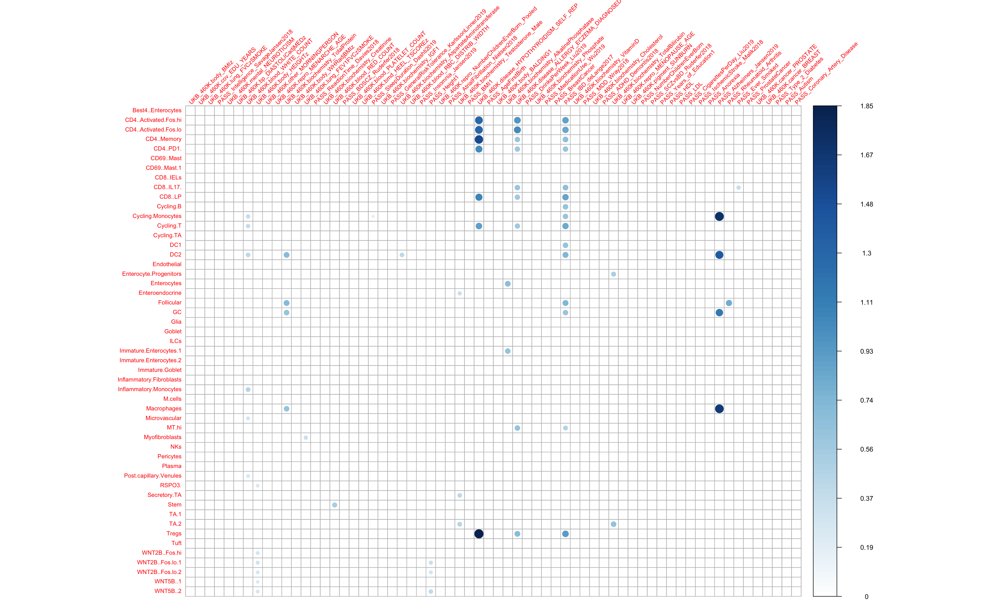
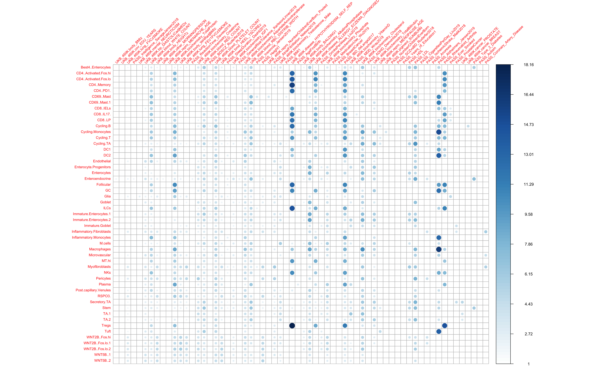
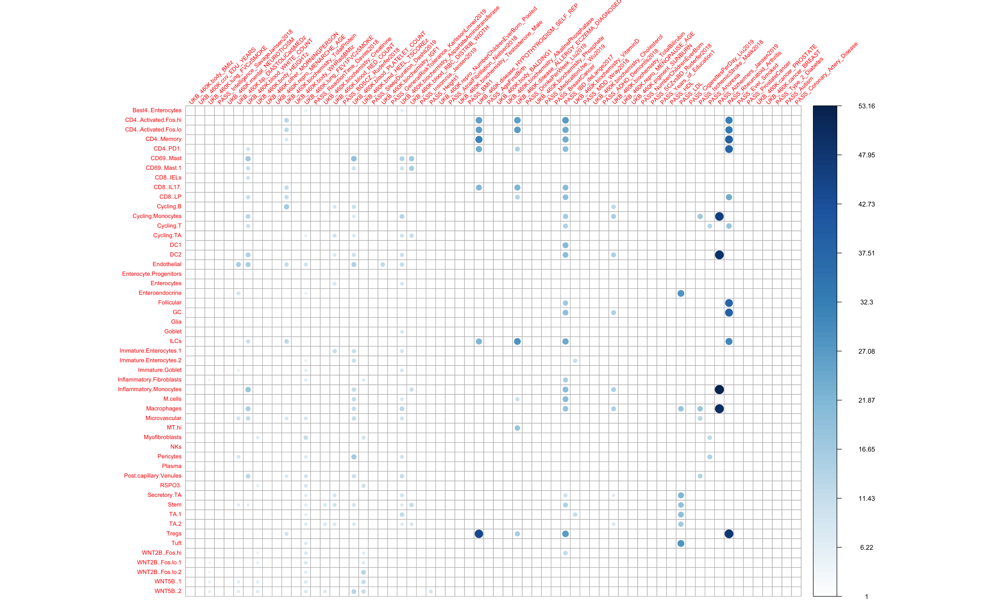
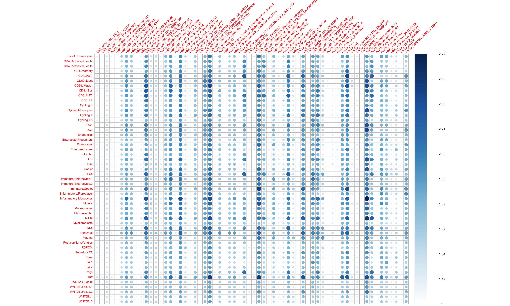
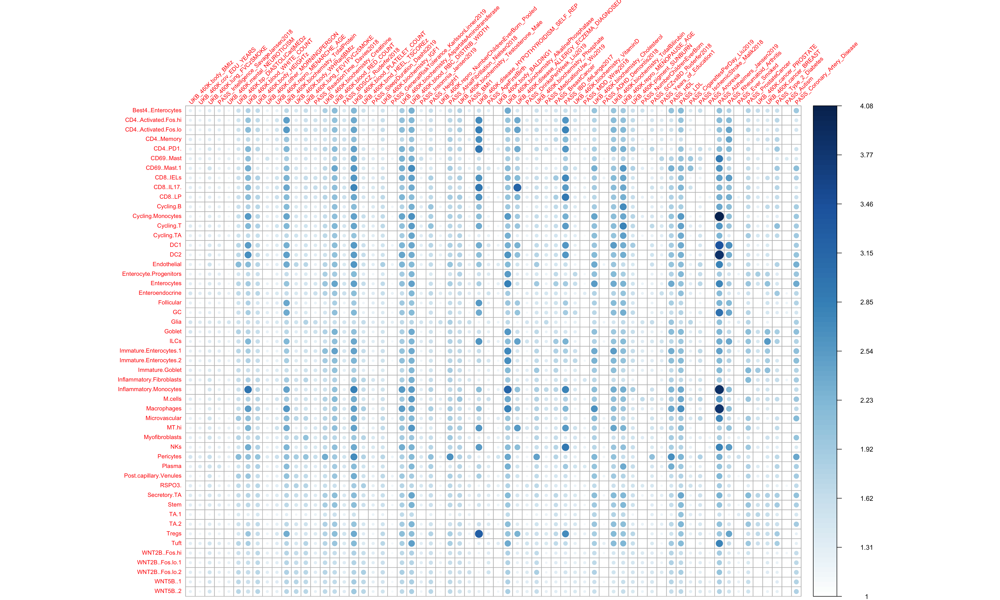

IBD 51 modules 64 traits S-LDSC analysis
Kushal K. Dey and Alkes Price
1/30/2020
Last updated: 2020-01-30
workflowr checks: (Click a bullet for more information)-
✖ R Markdown file: uncommitted changes
The R Markdown is untracked by Git. To know which version of the R Markdown file created these results, you’ll want to first commit it to the Git repo. If you’re still working on the analysis, you can ignore this warning. When you’re finished, you can runwflow_publishto commit the R Markdown file and build the HTML. -
✔ Environment: empty
Great job! The global environment was empty. Objects defined in the global environment can affect the analysis in your R Markdown file in unknown ways. For reproduciblity it’s best to always run the code in an empty environment.
-
✔ Seed:
set.seed(20200127)The command
set.seed(20200127)was run prior to running the code in the R Markdown file. Setting a seed ensures that any results that rely on randomness, e.g. subsampling or permutations, are reproducible. -
✔ Session information: recorded
Great job! Recording the operating system, R version, and package versions is critical for reproducibility.
-
Great! You are using Git for version control. Tracking code development and connecting the code version to the results is critical for reproducibility. The version displayed above was the version of the Git repository at the time these results were generated.✔ Repository version: d3172fb
Note that you need to be careful to ensure that all relevant files for the analysis have been committed to Git prior to generating the results (you can usewflow_publishorwflow_git_commit). workflowr only checks the R Markdown file, but you know if there are other scripts or data files that it depends on. Below is the status of the Git repository when the results were generated:
Note that any generated files, e.g. HTML, png, CSS, etc., are not included in this status report because it is ok for generated content to have uncommitted changes.Ignored files: Ignored: .Rproj.user/ Untracked files: Untracked: analysis/IBD_LDSC.Rmd Untracked: code/ALL_bedgraph_calc.R Untracked: code/build_module_annotations.R Untracked: code/curate_postprocessed_matrix.R Untracked: code/healthy_logfold_gene_scores.R Untracked: code/postprocess_ldsc.R Untracked: data/Healthy_gene_score/ Untracked: data/Healthy_gene_score_Top10/ Untracked: data/Healthy_logfold.csv Untracked: docs/figure/ Untracked: output/IBD_51_modules_S_LDSC.rda
library(ggplot2)Warning: package 'ggplot2' was built under R version 3.5.2library(corrplot)corrplot 0.84 loadedlibrary(qvalue)Warning: package 'qvalue' was built under R version 3.5.2IBD_ldsc = get(load("/Users/kushaldey/Documents/singlecellLDSC/output/IBD_51_modules_S_LDSC.rda"))
dim(IBD_ldsc)[1] 51 64 6 4Roadmap Enhancers linked to Genes
tau_table = IBD_ldsc[,,5,1]
ptau_table = IBD_ldsc[,,5,2]
qtau_table = matrix(qvalue(as.vector(ptau_table))$qvalues, nrow = nrow(tau_table), ncol = ncol(tau_table))
ptau_table2 = matrix(qvalue(as.vector(ptau_table))$pvalues, nrow = nrow(tau_table), ncol = ncol(tau_table))
tau_table[which(qtau_table > 0.1)] = 0
tau_table[tau_table < 0] = 0corrplot(tau_table, is.corr = F, tl.cex = 0.7, tl.srt = 45)
E_table = IBD_ldsc[,,5,3]
pE_table = IBD_ldsc[,,5,4]
qE_table = matrix(qvalue(as.vector(pE_table))$qvalues, nrow = nrow(E_table), ncol = ncol(E_table))
pE_table2 = matrix(qvalue(as.vector(pE_table))$pvalues, nrow = nrow(E_table), ncol = ncol(E_table))
E_table[which(qE_table > 0.05 & pE_table2 > 0.05)] = 1
E_table[E_table < 1] = 1corrplot(E_table, is.corr = F, tl.cex = 0.7, tl.srt = 45)
apply(E_table, 2, mean)[order(apply(E_table, 2, mean), decreasing = T)][1:15] PASS_IBD_deLange2017
5.872458
UKB_460K.biochemistry_TotalProtein
5.061755
UKB_460K.disease_HYPOTHYROIDISM_SELF_REP
4.939633
UKB_460K.biochemistry_Cholesterol
4.626593
UKB_460K.blood_PLATELET_COUNT
4.527646
PASS_Alzheimers_Jansen2019
4.511489
UKB_460K.blood_WHITE_COUNT
4.248176
PASS_LDL
4.207212
UKB_460K.blood_RED_COUNT
4.183305
UKB_460K.biochemistry_AspartateAminotransferase
4.014825
UKB_460K.blood_RBC_DISTRIB_WIDTH
3.967938
PASS_Rheumatoid_Arthritis
3.895760
UKB_460K.biochemistry_AlkalinePhosphatase
3.816325
UKB_460K.disease_ALLERGY_ECZEMA_DIAGNOSED
3.677983
UKB_460K.biochemistry_TotalBilirubin
3.055325 apply(E_table, 2, sd)[order(apply(E_table, 2, sd), decreasing = T)][1:15] UKB_460K.disease_HYPOTHYROIDISM_SELF_REP
5.364897
PASS_Alzheimers_Jansen2019
4.607590
PASS_Rheumatoid_Arthritis
3.935174
PASS_IBD_deLange2017
3.359670
UKB_460K.disease_ALLERGY_ECZEMA_DIAGNOSED
3.059470
PASS_LDL
2.847835
UKB_460K.biochemistry_AlkalinePhosphatase
2.555592
UKB_460K.biochemistry_Cholesterol
2.494402
UKB_460K.biochemistry_TotalProtein
2.307955
UKB_460K.biochemistry_TotalBilirubin
2.011200
PASS_HDL
1.872078
UKB_460K.blood_RBC_DISTRIB_WIDTH
1.817444
UKB_460K.biochemistry_Phosphate
1.689354
UKB_460K.blood_WHITE_COUNT
1.686410
UKB_460K.biochemistry_VitaminD
1.461633 E_table[order(E_table[,"PASS_IBD_deLange2017"], decreasing = T)[1:10],"PASS_IBD_deLange2017"] Tregs Follicular CD4..Activated.Fos.lo
11.471557 10.903005 10.825520
CD8..LP CD4..Activated.Fos.hi DC2
10.795244 10.646000 10.022787
CD8..IL17. DC1 Cycling.T
10.017031 9.901223 9.845755
CD4..PD1.
9.616281 E_table[order(E_table[,"PASS_IBD_deLange2017"], decreasing = F)[1:10],"PASS_IBD_deLange2017"]Enterocyte.Progenitors Enteroendocrine Goblet
1.000000 1.000000 1.000000
Immature.Goblet Myofibroblasts TA.1
1.000000 1.000000 1.000000
Tuft WNT5B..1 Glia
1.000000 3.024426 3.086470
WNT5B..2
3.137741 E_table[order(E_table[,"PASS_Alzheimers_Jansen2019"], decreasing = T)[1:10],"PASS_Alzheimers_Jansen2019"] Macrophages Cycling.Monocytes Tuft
16.318060 15.044142 13.657863
DC2 Inflammatory.Monocytes GC
13.607167 12.854002 12.471595
CD69..Mast.1 CD69..Mast Follicular
11.368660 10.853024 9.537845
DC1
8.919637 E_table[order(E_table[,"PASS_Alzheimers_Jansen2019"], decreasing = F)[1:10],"PASS_Alzheimers_Jansen2019"] CD4..Activated.Fos.hi CD4..Activated.Fos.lo CD4..Memory
1 1 1
CD4..PD1. CD8..IL17. Endothelial
1 1 1
Enterocyte.Progenitors Enterocytes Enteroendocrine
1 1 1
Glia
1 ABC
tau_table = IBD_ldsc[,,6,1]
ptau_table = IBD_ldsc[,,6,2]
qtau_table = matrix(qvalue(as.vector(ptau_table))$qvalues, nrow = nrow(tau_table), ncol = ncol(tau_table))
ptau_table2 = matrix(qvalue(as.vector(ptau_table))$pvalues, nrow = nrow(tau_table), ncol = ncol(tau_table))
tau_table[which(qtau_table > 0.1)] = 0
tau_table[tau_table < 0] = 0corrplot(tau_table, is.corr = F, tl.cex = 0.7, tl.srt = 45)E_table = IBD_ldsc[,,6,3]
pE_table = IBD_ldsc[,,6,4]
qE_table = matrix(qvalue(as.vector(pE_table))$qvalues, nrow = nrow(E_table), ncol = ncol(E_table))
pE_table2 = matrix(qvalue(as.vector(pE_table))$pvalues, nrow = nrow(E_table), ncol = ncol(E_table))
E_table[which(qE_table > 0.05 & pE_table2 > 0.05)] = 1
E_table[E_table < 1] = 1corrplot(E_table, is.corr = F, tl.cex = 0.7, tl.srt = 45)
apply(E_table, 2, mean)[order(apply(E_table, 2, mean), decreasing = T)][1:15] PASS_IBD_deLange2017
8.567628
PASS_Rheumatoid_Arthritis
7.455797
PASS_Alzheimers_Jansen2019
4.812895
UKB_460K.disease_HYPOTHYROIDISM_SELF_REP
4.715470
UKB_460K.blood_PLATELET_COUNT
4.708370
UKB_460K.biochemistry_AspartateAminotransferase
4.501082
UKB_460K.blood_WHITE_COUNT
4.346700
UKB_460K.disease_ALLERGY_ECZEMA_DIAGNOSED
4.293222
PASS_LDL
3.867642
UKB_460K.lung_FEV1FVCzSMOKE
3.738756
UKB_460K.biochemistry_TotalProtein
3.224559
UKB_460K.biochemistry_TotalBilirubin
2.836417
UKB_460K.bmd_HEEL_TSCOREz
2.368010
UKB_460K.blood_RBC_DISTRIB_WIDTH
2.352044
UKB_460K.blood_RED_COUNT
2.273904 apply(E_table, 2, sd)[order(apply(E_table, 2, sd), decreasing = T)][1:15] PASS_Rheumatoid_Arthritis
13.684725
PASS_Alzheimers_Jansen2019
13.219838
UKB_460K.disease_HYPOTHYROIDISM_SELF_REP
9.811193
PASS_IBD_deLange2017
9.551720
UKB_460K.disease_ALLERGY_ECZEMA_DIAGNOSED
7.630405
PASS_LDL
7.440281
UKB_460K.blood_WHITE_COUNT
5.511788
UKB_460K.blood_PLATELET_COUNT
5.354829
UKB_460K.biochemistry_AspartateAminotransferase
4.620092
UKB_460K.biochemistry_TotalBilirubin
4.478089
UKB_460K.biochemistry_TotalProtein
4.438121
PASS_IschemicStroke_Malik2018
4.049626
UKB_460K.blood_RBC_DISTRIB_WIDTH
3.875967
UKB_460K.bmd_HEEL_TSCOREz
3.354718
UKB_460K.lung_FEV1FVCzSMOKE
3.348008 E_table[order(E_table[,"PASS_IBD_deLange2017"], decreasing = T)[1:10],"PASS_IBD_deLange2017"] Tregs CD4..Activated.Fos.hi ILCs
26.72201 26.60844 24.28779
CD4..Activated.Fos.lo CD4..Memory DC1
23.98238 23.79941 21.33976
Inflammatory.Monocytes M.cells CD8..IL17.
20.65308 20.53891 20.43182
DC2
20.02077 E_table[order(E_table[,"PASS_IBD_deLange2017"], decreasing = F)[1:10],"PASS_IBD_deLange2017"] Best4..Enterocytes CD69..Mast CD69..Mast.1
1 1 1
CD8..IELs Cycling.B Cycling.TA
1 1 1
Endothelial Enterocyte.Progenitors Enterocytes
1 1 1
Enteroendocrine
1 100kb
tau_table = IBD_ldsc[,,1,1]
ptau_table = IBD_ldsc[,,1,2]
qtau_table = matrix(qvalue(as.vector(ptau_table))$qvalues, nrow = nrow(tau_table), ncol = ncol(tau_table))
ptau_table2 = matrix(qvalue(as.vector(ptau_table))$pvalues, nrow = nrow(tau_table), ncol = ncol(tau_table))
tau_table[which(qtau_table > 0.1)] = 0
tau_table[tau_table < 0] = 0corrplot(tau_table, is.corr = F, tl.cex = 0.7, tl.srt = 45)
E_table = IBD_ldsc[,,1,3]
pE_table = IBD_ldsc[,,1,4]
qE_table = matrix(qvalue(as.vector(pE_table))$qvalues, nrow = nrow(E_table), ncol = ncol(E_table))
pE_table2 = matrix(qvalue(as.vector(pE_table))$pvalues, nrow = nrow(E_table), ncol = ncol(E_table))
E_table[which(qE_table > 0.05 & pE_table2 > 0.05)] = 1
E_table[E_table < 1] = 1corrplot(E_table, is.corr = F, tl.cex = 0.7, tl.srt = 45)
apply(E_table, 2, mean)[order(apply(E_table, 2, mean), decreasing = T)][1:15] UKB_460K.blood_RBC_DISTRIB_WIDTH
2.053222
PASS_Alzheimers_Jansen2019
2.032173
UKB_460K.biochemistry_AlkalinePhosphatase
1.989935
UKB_460K.blood_PLATELET_COUNT
1.976592
PASS_LDL
1.943367
UKB_460K.biochemistry_TotalProtein
1.922019
UKB_460K.biochemistry_Cholesterol
1.874332
UKB_460K.blood_RED_COUNT
1.860969
PASS_IBD_deLange2017
1.857088
UKB_460K.repro_MENOPAUSE_AGE
1.816528
UKB_460K.biochemistry_TotalBilirubin
1.790303
UKB_460K.biochemistry_AspartateAminotransferase
1.758849
UKB_460K.blood_WHITE_COUNT
1.737588
PASS_Rheumatoid_Arthritis
1.717732
PASS_HDL
1.716032 apply(E_table, 2, sd)[order(apply(E_table, 2, sd), decreasing = T)][1:15] PASS_Alzheimers_Jansen2019
0.2440953
PASS_Rheumatoid_Arthritis
0.2313642
UKB_460K.disease_HYPOTHYROIDISM_SELF_REP
0.2271266
PASS_LDL
0.2030652
UKB_460K.biochemistry_TotalProtein
0.1990102
PASS_IBD_deLange2017
0.1893758
UKB_460K.biochemistry_AlkalinePhosphatase
0.1881168
UKB_460K.pigment_SUNBURN
0.1800913
UKB_460K.biochemistry_Cholesterol
0.1786182
UKB_460K.disease_ALLERGY_ECZEMA_DIAGNOSED
0.1760155
UKB_460K.repro_MENOPAUSE_AGE
0.1684803
UKB_460K.blood_RBC_DISTRIB_WIDTH
0.1654130
UKB_460K.blood_PLATELET_COUNT
0.1584117
PASS_HDL
0.1483062
UKB_460K.blood_RED_COUNT
0.1477188 E_table[order(E_table[,"PASS_IBD_deLange2017"], decreasing = T)[1:10],"PASS_IBD_deLange2017"] ILCs CD4..PD1. CD8..IL17.
2.258145 2.253687 2.245093
NKs MT.hi Inflammatory.Monocytes
2.234848 2.145952 2.086057
Cycling.T CD8..IELs DC1
2.066631 2.055417 2.044495
Tregs
2.022182 E_table[order(E_table[,"PASS_IBD_deLange2017"], decreasing = F)[1:10],"PASS_IBD_deLange2017"] TA.1 Myofibroblasts WNT5B..2 WNT2B..Fos.lo.1
1.522688 1.533475 1.567090 1.597722
TA.2 WNT5B..1 WNT2B..Fos.hi Glia
1.610595 1.618908 1.626916 1.685279
Cycling.TA WNT2B..Fos.lo.2
1.687796 1.701401 5kb
tau_table = IBD_ldsc[,,2,1]
ptau_table = IBD_ldsc[,,2,2]
qtau_table = matrix(qvalue(as.vector(ptau_table))$qvalues, nrow = nrow(tau_table), ncol = ncol(tau_table))
ptau_table2 = matrix(qvalue(as.vector(ptau_table))$pvalues, nrow = nrow(tau_table), ncol = ncol(tau_table))
tau_table[which(qtau_table > 0.1)] = 0
tau_table[tau_table < 0] = 0corrplot(tau_table, is.corr = F, tl.cex = 0.7, tl.srt = 45)E_table = IBD_ldsc[,,2,3]
pE_table = IBD_ldsc[,,2,4]
qE_table = matrix(qvalue(as.vector(pE_table))$qvalues, nrow = nrow(E_table), ncol = ncol(E_table))
pE_table2 = matrix(qvalue(as.vector(pE_table))$pvalues, nrow = nrow(E_table), ncol = ncol(E_table))
E_table[which(qE_table > 0.05 & pE_table2 > 0.05)] = 1
E_table[E_table < 1] = 1corrplot(E_table, is.corr = F, tl.cex = 0.7, tl.srt = 45)
apply(E_table, 2, mean)[order(apply(E_table, 2, mean), decreasing = T)][1:15] PASS_Alzheimers_Jansen2019
2.391466
UKB_460K.blood_PLATELET_COUNT
2.242119
UKB_460K.blood_RBC_DISTRIB_WIDTH
2.222236
UKB_460K.biochemistry_AlkalinePhosphatase
2.151291
PASS_LDL
2.054930
UKB_460K.repro_MENOPAUSE_AGE
2.043653
UKB_460K.biochemistry_TotalProtein
2.032720
UKB_460K.blood_RED_COUNT
1.997677
UKB_460K.biochemistry_TotalBilirubin
1.994129
UKB_460K.biochemistry_AspartateAminotransferase
1.993916
UKB_460K.biochemistry_Cholesterol
1.957126
UKB_460K.blood_WHITE_COUNT
1.953138
PASS_IBD_deLange2017
1.908192
UKB_460K.disease_HYPOTHYROIDISM_SELF_REP
1.880607
PASS_HDL
1.858650 apply(E_table, 2, sd)[order(apply(E_table, 2, sd), decreasing = T)][1:15] UKB_460K.disease_HYPOTHYROIDISM_SELF_REP
0.5989371
PASS_Alzheimers_Jansen2019
0.5754731
PASS_IBD_deLange2017
0.5259231
UKB_460K.disease_ALLERGY_ECZEMA_DIAGNOSED
0.4601630
PASS_Rheumatoid_Arthritis
0.4133567
UKB_460K.repro_MENOPAUSE_AGE
0.3413668
UKB_460K.blood_WHITE_COUNT
0.3396028
UKB_460K.biochemistry_AlkalinePhosphatase
0.3328101
UKB_460K.biochemistry_TotalProtein
0.3132624
PASS_Coronary_Artery_Disease
0.3118370
UKB_460K.cancer_BREAST
0.3070322
UKB_460K.blood_PLATELET_COUNT
0.2930535
PASS_Type_2_Diabetes
0.2919373
PASS_HDL
0.2893166
UKB_460K.biochemistry_TotalBilirubin
0.2867547 E_table[order(E_table[,"PASS_IBD_deLange2017"], decreasing = T)[1:10],"PASS_IBD_deLange2017"] NKs CD8..LP CD4..Activated.Fos.lo
2.929567 2.920033 2.794907
Inflammatory.Monocytes CD8..IELs Tregs
2.787033 2.750864 2.702216
DC1 CD4..Activated.Fos.hi CD4..PD1.
2.580426 2.574613 2.573252
DC2
2.572248 E_table[order(E_table[,"PASS_IBD_deLange2017"], decreasing = F)[1:10],"PASS_IBD_deLange2017"] Glia TA.1 WNT5B..1
1.257344 1.281749 1.301107
Immature.Goblet WNT5B..2 WNT2B..Fos.lo.1
1.306512 1.327535 1.337425
Myofibroblasts WNT2B..Fos.hi Enteroendocrine
1.341562 1.362973 1.388907
Enterocyte.Progenitors
1.398761 Session information
sessionInfo()R version 3.5.1 (2018-07-02)
Platform: x86_64-apple-darwin15.6.0 (64-bit)
Running under: macOS High Sierra 10.13.6
Matrix products: default
BLAS: /Library/Frameworks/R.framework/Versions/3.5/Resources/lib/libRblas.0.dylib
LAPACK: /Library/Frameworks/R.framework/Versions/3.5/Resources/lib/libRlapack.dylib
locale:
[1] en_US.UTF-8/en_US.UTF-8/en_US.UTF-8/C/en_US.UTF-8/en_US.UTF-8
attached base packages:
[1] stats graphics grDevices utils datasets methods base
other attached packages:
[1] qvalue_2.14.1 corrplot_0.84 ggplot2_3.1.1
loaded via a namespace (and not attached):
[1] Rcpp_1.0.1 compiler_3.5.1 pillar_1.3.1
[4] git2r_0.23.0 plyr_1.8.4 workflowr_1.1.1
[7] R.methodsS3_1.7.1 R.utils_2.7.0 tools_3.5.1
[10] digest_0.6.19 evaluate_0.12 tibble_2.1.1
[13] gtable_0.3.0 pkgconfig_2.0.2 rlang_0.4.2
[16] yaml_2.2.0 withr_2.1.2 stringr_1.4.0
[19] dplyr_0.8.0.1 knitr_1.20 rprojroot_1.3-2
[22] grid_3.5.1 tidyselect_0.2.5 glue_1.3.1
[25] R6_2.4.0 rmarkdown_1.10 reshape2_1.4.3
[28] purrr_0.3.2 magrittr_1.5 whisker_0.3-2
[31] splines_3.5.1 backports_1.1.4 scales_1.0.0
[34] htmltools_0.3.6 assertthat_0.2.1 colorspace_1.4-1
[37] stringi_1.4.3 lazyeval_0.2.2 munsell_0.5.0
[40] crayon_1.3.4 R.oo_1.22.0 This reproducible R Markdown analysis was created with workflowr 1.1.1